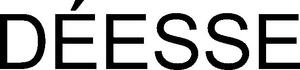

Trade Mark Journal No.2026/003 16 January 2026
WO0000001714363 (3,5,10,18,25,32,41,44)
Office of origin: Switzerland
Date of International Registration:19 November 2022
Date of designation in the UK:
19 September 2025

- Class 3
- Non-medical cosmetic products and body hygiene and beauty products; soaps; hair lotions; hair care products; shampoos; conditioners; decorative cosmetics; non-medical toothpastes; perfumery; essential oils; bleaching and washing preparations; cleaning, polishing, degreasing and abrasive products.
- Class 5
- Sanitary preparations; dietetic food and products for medical or veterinary use; food for babies; dietary supplements for humans and animals; disinfectants; mineral food supplements based on fructose for non-medical use.
- Class 10
- Skin treatment apparatus.
- Class 18
- Leather and imitations of leather; trunks and suitcases; umbrellas, parasols; handbags, briefcases, shopping bags, satchels; backpacks; make-up bags; travel accessories (leather goods).
- Class 25
- Clothing, footwear, headwear.
- Class 32
- Syrups and other non-alcoholic preparations for making beverages.
- Class 41
- Education and training of sales personnel in the field of cosmetics; education and training of agents in the field of cosmetics.
- Class 44
- Medical services; health and beauty care for people and animals; advisory services with respect to beauty; advice in the field of cosmetics.
Déesse AG
Representative: Dr. Lusuardi AG, Kreuzbühlstrasse 8, CH-8008 Zürich, SWITZERLAND